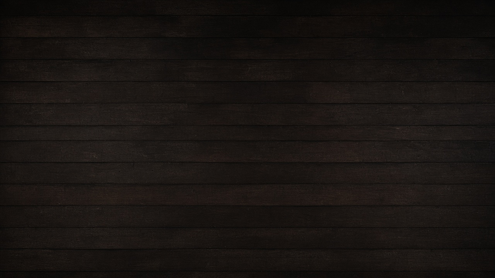
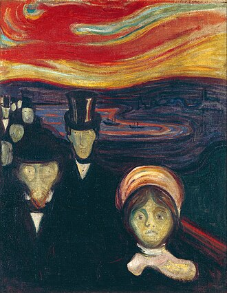
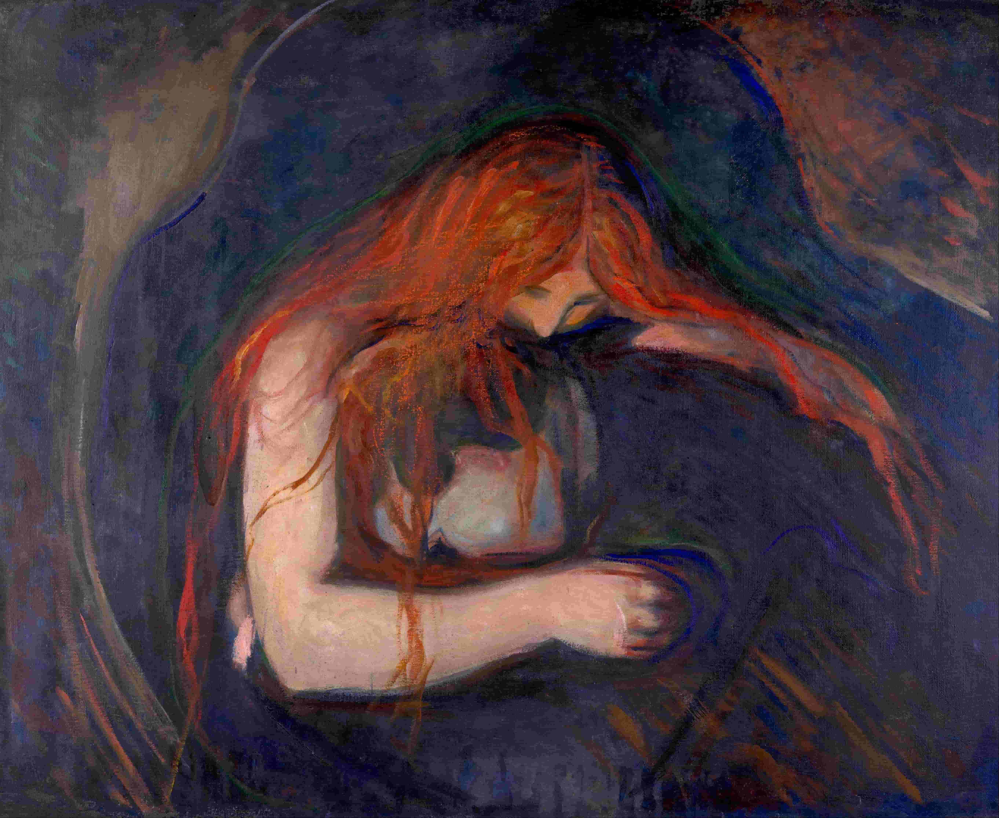

Munch malte søsteren Sophie, som døde av tuberkulose. En kvinne sitter bøyd ved sengen. Bildet handler om sykdom, sorg og det å ta farvel, og han malte flere versjoner av motivet.

På Karl Johan kommer folk mot oss med bleke, tomme ansikter. Mørke klær og kaldt kveldslys gjør gaten urolig. Maleriet viser hvor ensom man kan være midt i en folkemengde.

En folkemengde med stive ansikter står under en rød, virvlende himmel. Landskapet ligner det i Skrik. Bildet hører til Livsfrisen, og frykten kjennes som noe alle bærer på.

En kvinne med rødt hår lener seg over en mann og holder rundt ham. Munch kalte bildet Kjærlighet og smerte. En venn ga det navnet Vampyr. Det kan leses som trøst, men også som noe som tærer.